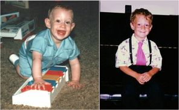
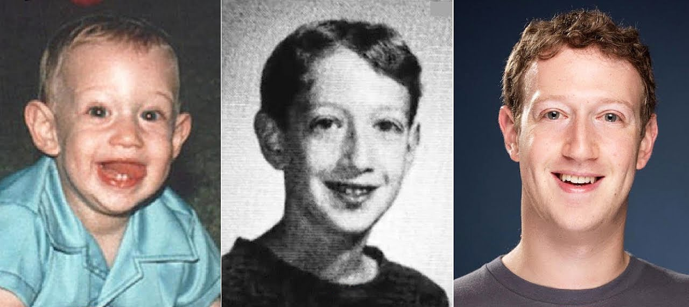

Народився Марк Еліот Цукерберг 14 травня 1984 року в місті Уайт-Плейнс
(штат Нью-Йорк) в єврейській родині лікарів. Мати Марка - Карен,
працювала психіатром, а батько - Едвард, був стоматологом. У родині
Цукерберг крім Марка було ще троє дочок: Ренді, Аріель і Донна.

Знайомство з програмуванням
Зацікавленість в комп'ютерному програмуванні прокинулася у хлопчика в 10
років, коли батько подарував йому перший комп'ютер, на якому
продемонстрував синові елементарні і базові елементи мови програмування
Atari BASIC.

Перша програма
У 1996 році 12-річний Марк Цукерберг створив перший повноцінний
програмний продукт під назвою ZuckNet, який давав можливість
спілкуватися по локальній мережі членам сім'ї.
Перша відмова
Для дипломної роботи Цукерберг створив програму розпізнавання музичних
смаків користувачів інтернету - Synapse, яку пізніше у юного хакера захотіла
викупити компанія Microsoft за 2 мільйони доларів. Керівництво гігантської
IT-компанії запропонувало Марку стати її співробітником до закінчення
школи, але хлопець відмовився і від нагороди, і від співробітництва,
заявивши, що "натхнення не продається".